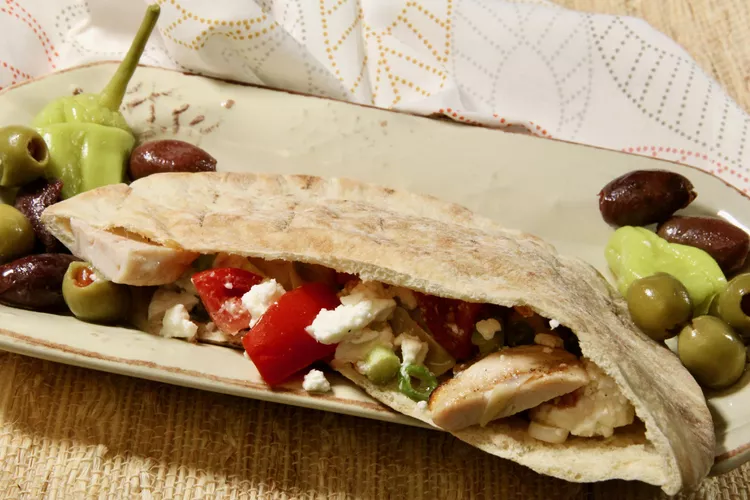

Mediterranean Chicken Pitas

Prep time: 15 mins | Total time: 15 mins | Servings: 2
Ingredients
- 1 cup marinated artichoke hearts, drained and chopped
- ½ cup crumbled feta cheese
- ½ cup thinly sliced green onions
- 1 tablespoon lemon juice
- 1 teaspoon salt
- ½ teaspoon ground black pepper
- 2 (6 inch) whole wheat pita breads, split and toasted
- 4 ounces roasted chicken breast, sliced
Directions
Step 1
Combine artichokes with feta cheese, green onions, lemon juice, salt, and pepper in a bowl. Spoon into pita halves. Divide chicken slices and add to pita pockets.